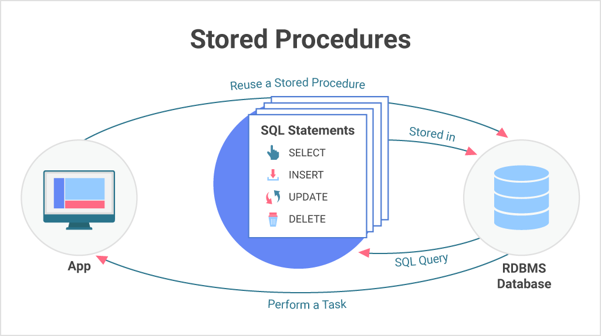
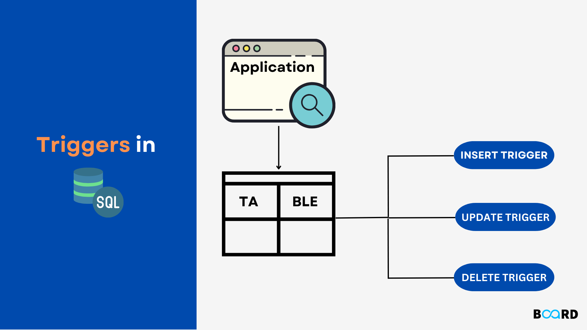

This project focuses on cleaning and standardizing data within the NashvilleHousing table to ensure data integrity and consistency. The steps include standardizing date formats, handling NULL values, breaking down address information into individual components, and updating categorical values. Additionally, it involves removing duplicate records and unused columns. The project emphasizes the importance of using SQL_SAFE_UPDATES to prevent unintended modifications during data manipulation.

This project involves exploring and analyzing COVID-19 data to gain insights into various aspects of the pandemic. The analysis includes examining total cases versus total deaths, infection rates, and vaccination progress across different regions. The project utilizes a range of SQL techniques including joins, Common Table Expressions (CTEs), temporary tables, window functions, aggregate functions, and view creation.

This stored procedure assigns hours to a specific project and employee, while ensuring that the total hours assigned to the project do not exceed a predefined maximum limit. The procedure starts a transaction to ensure data consistency and uses a savepoint to manage potential errors.

This script demonstrates the use of triggers to enforce data integrity and perform auditing in a database. It includes: 1. A trigger to validate hours assigned to a project before insertion, ensuring that the total does not exceed a maximum limit. 2. A trigger to log changes in project assignments for auditing purposes.

This holds all of my Tableau Dashboard.